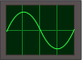

Images
Once you understand links, adding images is straightforward.
You do not actually create
images using HTML (like you would a heading or a paragraph). Instead, the
image is contained within a file, which you then embed in
your web page using the <img> tag.
Let's see how this works:
Image
(source)
<p> Yet more evidence that I did not go to Art School: </p> <img src="oscope.gif" alt="I drew this oscilloscope myself!">
To try this example on your own, you will not only need to copy the HTML --
you will also need to download the image below to your workstation. See
the Browser Tools
section if you don't know how to do this. Save the file in the same directory
as your test page, and try it out. (Note: while you have permission
to download my oscope.gif image for learning purposes,
keep in mind that you cannot freely download and use any image on any
web page unless the author explicitly tells you otherwise.)
Image (Results)
Yet more evidence that I did not go to Art School:

The <img> tag has two critical attributes:
The title Attribute
Some browsers will display the alt text as a "tooltip" that pops up if
you hover your mouse over the image. However, strictly speaking, this is
incorrect behavior: the alt attribute is for when the image
cannot be displayed. To provide "extra information" about an image, use the
optional title attribute instead.
The
srcattribute provides a URL that points to the image file. This is just like thehrefattribute of the<a>tag. In the case above, we're calling a (It's too bad that they couldn't both be called "href", because then this would all be easier to remember.)The
altattribute provides alternative text for the image. This text is meant to be read in place of the image, should the image not be displayable. This could happen if the user turns off images in their browser, or uses a browser that doesn't support images (such as a text-only browser or a voice browser). The alternative text could also appear while the user is waiting for the image to download, or if the link to the image is broken.
Image files have nothing to
do with the HTML language per se. Images have their own
formats, such as GIF, JPEG, or
PNG. To create an image, you will need some sort of drawing
or photography software. Such software is outside the scope of this tutorial
(and given my poor grasp of graphic design, outside the scope of my
expertise as well.)
Stretching Images
Let's take a look at two more attributes, height and
width. These attributes are a way of "warning" the browser
how much room to reserve on the screen for the image. The browser can
then lay out the text of the web page properly while leaving
"empty boxes" for the images, filling them in as they download. This is
particularly useful for users who have slow connections.
What happens if you specify the height and
width, but you don't provide the right pixel sizes?
Distorted Images
(source)
<p> We've got 'em in all sizes, folks: </p> <img src="oscope.gif" height="128" width="180" alt="double-sized oscilloscope"> <img src="oscope.gif" height="64" width="90" alt="normal-sized oscilloscope"> <img src="oscope.gif" height="32" width="45" alt="half-sized oscilloscope, for the kids!"> <img src="oscope.gif" height="64" width="45" alt="floor-model oscilloscope - big discount!">
The actual size of the oscilloscope image is 64 pixels high by 90 pixels wide.
As you can see, the height and
width attributes can stretch or squash the image:
Distorted Images (Results)
We've got 'em in all sizes, folks:
For the first three images, I multiplied the height and
width attributes above by the same factor (2, 1, and 1/2).
For the last image (the "floor model"), I multipled the width
by 1/2 and left the height alone.
Stretching and squashing an image is fun, but it isn't always very useful.
If you stretch the image so that it is larger, the quality of the image
detail usually suffers. If you squash the image, your users will
see a smaller image, but they will be downloading
an image file that is unnecessarily large (meaning wasted time and
bandwidth.) In general, it's best to make sure the image file itself is the
correct size instead of stretching it with the height and
width attributes. (There are, of course, exceptions to
this rule.)
Floating Images
Positioning elements in HTML can be quite tricky, and we'll be talking about
how to do this in the more advanced sections of this tutorial. That said,
let's take a sneak preview at one of the basic concepts of positioning: the
float property.
Floating Images
(source)
<p> <img src="oscope.gif" height="32" width="45" alt="Shrunken oscilloscope"> <b>Not Your Father's Oscilloscope...</b> <img src="oscope.gif" height="32" width="45" alt="Shrunken oscilloscope"> </p> <img src="oscope.gif" height="64" width="90" alt="Right-floating oscilloscope" style="float: right"> <p> <b>The Model XJ-2000:</b> Quality, quality, quality. That's what our bosses asked for when we designed the XJ-2000, and that's what we delivered. Our competitors claim to deliver "quality"... but do they? Sure, they prattle on about about sample rates, picosecond/div sweep rates, Fast Fourier Transforms, and other technical mumbo-jumbo.But the fact is that the XJ-2000 is light-years ahead of the competition. From the scratch-resistant chrome case to the innovative green-phosophorescent screen, only one word should spring to mind when you look at the XJ-2000: quality. </p>
We've added the float: right property to the
style attribute of the third image.
If we hadn't added that property, the paragraph
would have started on the line below the image. Instead, we get:
Floating Images (Results)
Not Your Father's Oscilloscope...
The Model XJ-2000: Quality, quality, quality. That's what our bosses asked for when we designed the XJ-2000, and that's what we delivered. Our competitors claim to deliver "quality"... but do they? Sure, they prattle on about about sample rates, picosecond/div sweep rates, Fast Fourier Transforms, and other mumbo-jumbo. But the fact is that the XJ-2000 is light-years ahead of the competition. From the scratch-resistant chrome case to the innovative green-phosophorescent screen, only one word should spring to mind when you look at the XJ-2000: quality.
Note the difference between the third image and the first two images.
The first two images appear inline with the text in their paragraph.
The third image is removed from the regular flow of the page:
it "floats" to the right, and the paragraph flows around the image. We
could also have specified float: left, in which case the
image would float to the left of the paragraph.
On to the Intermediate Section
Congratulations, you've finished the basic section! In the next section we learn about lists, advanced font styling, alignment, margins, and borders. Read on for more...
Exercise 4
Save your file as images.html.
Add images to your page. Save the pictures into the folder with all of your HTML files. If you don't have pictures of your own that you want to add, you can get some CC-licensed images from Flickr.
Links are discussed in Attributes and Links.